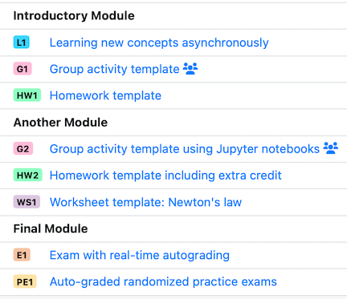

You can now declare a list of course modules from your course configuration file. These are collections of assessments that can belong to different sets, which get displayed together in the order that you declare them. You can think of them as chapters, sections, or topic lists in your course. If you want to group together several types of assessments sets (for example, two homeworks and an exam), now you can!
This organization selection is done at the course instance level. Thus you can sort some sections/semesters of your course by "Sets", and some others by "Modules". Visit the PrairieLearn documentation for more information.